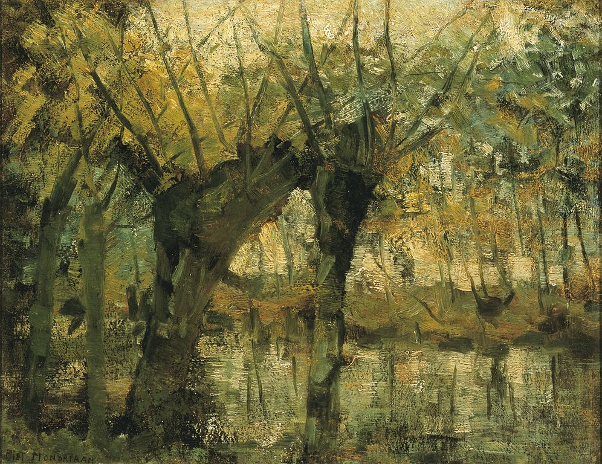
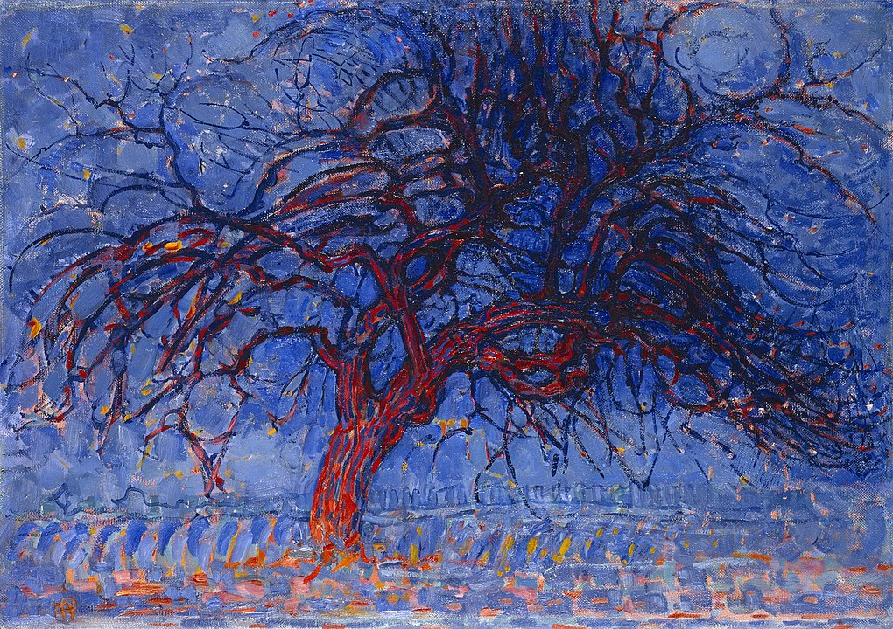
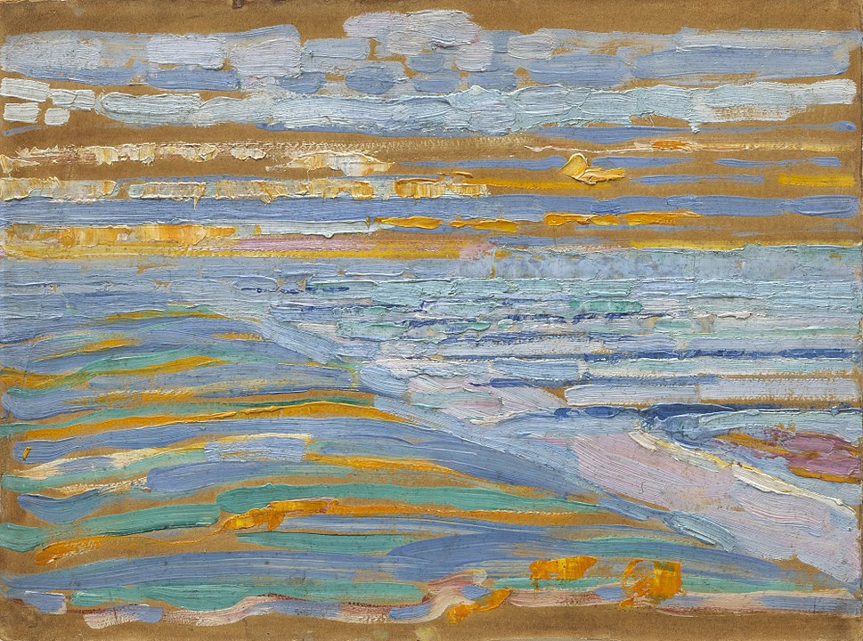
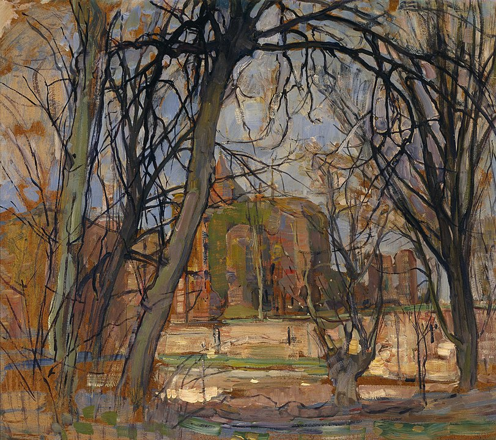
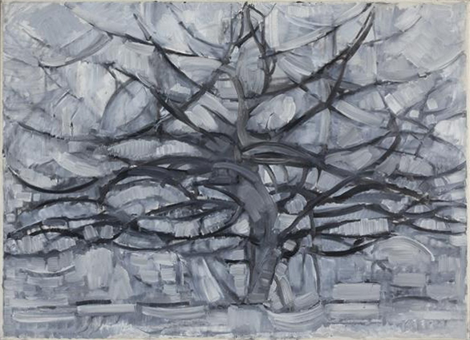
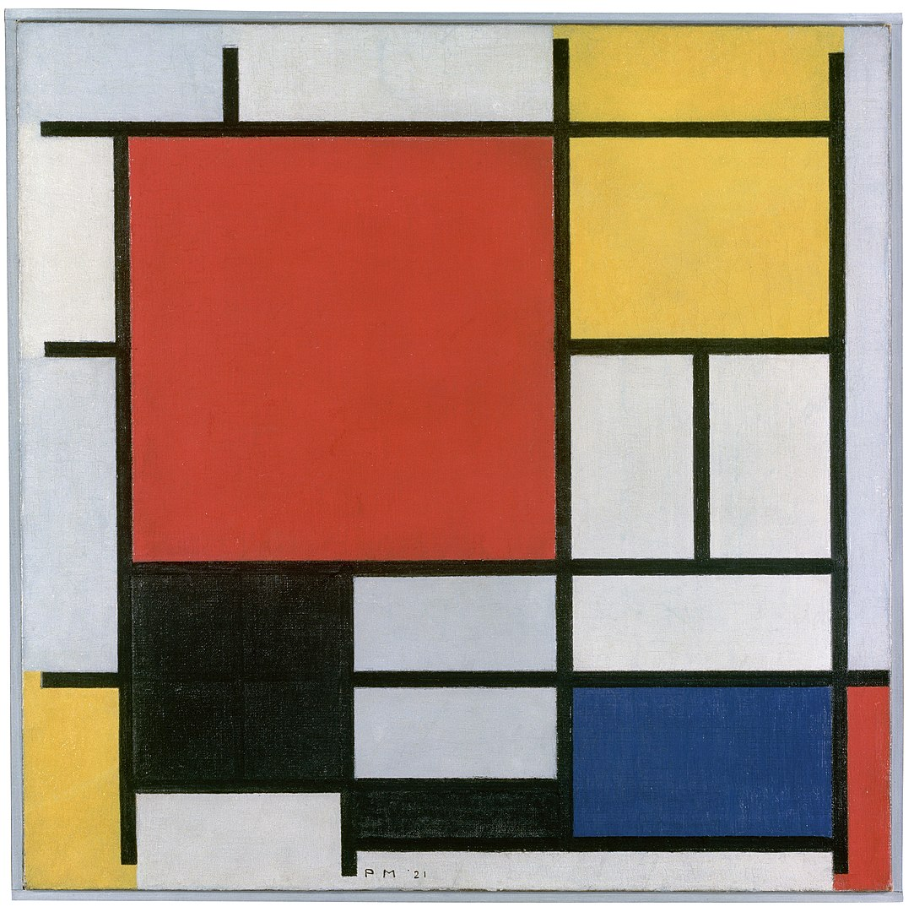
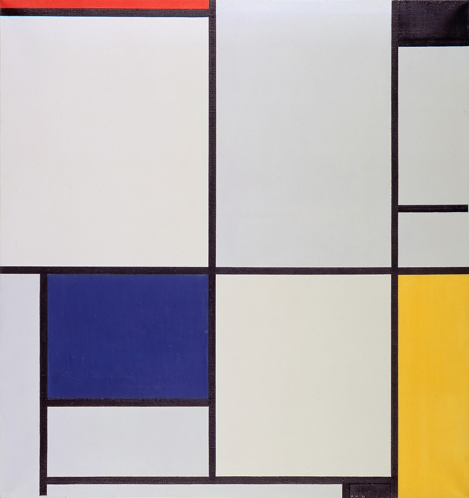
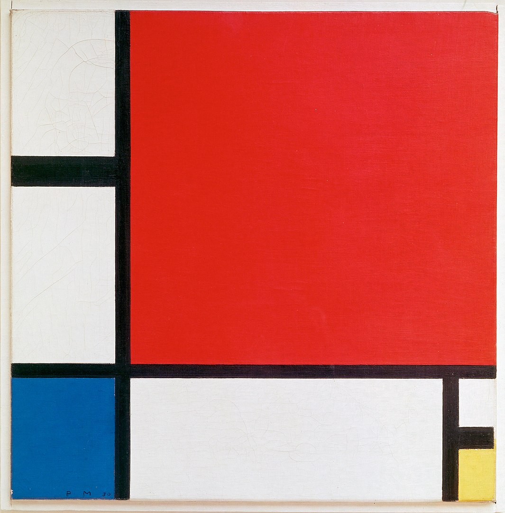
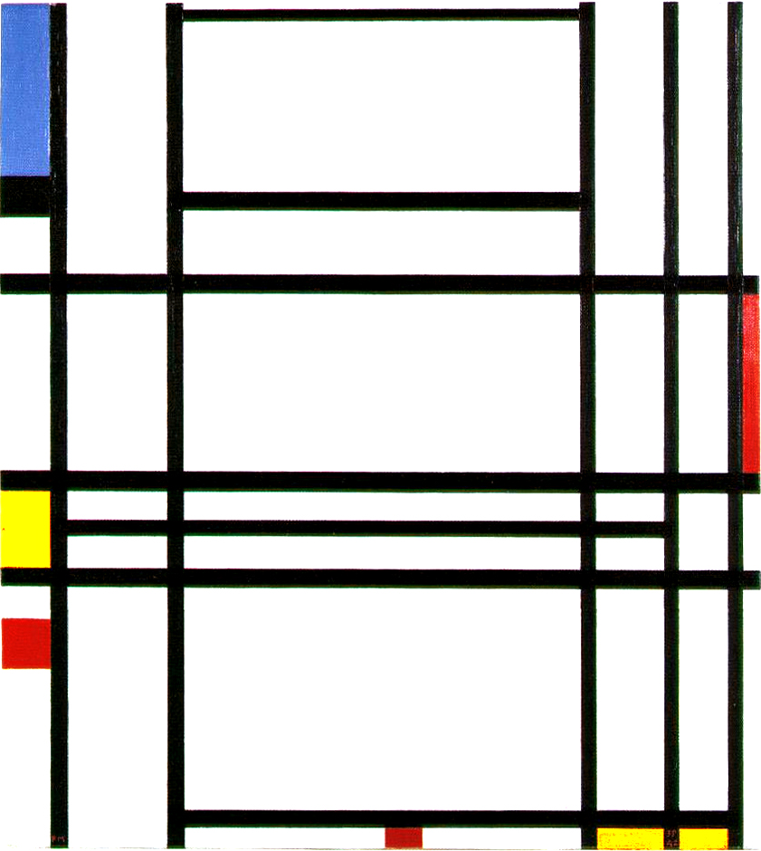
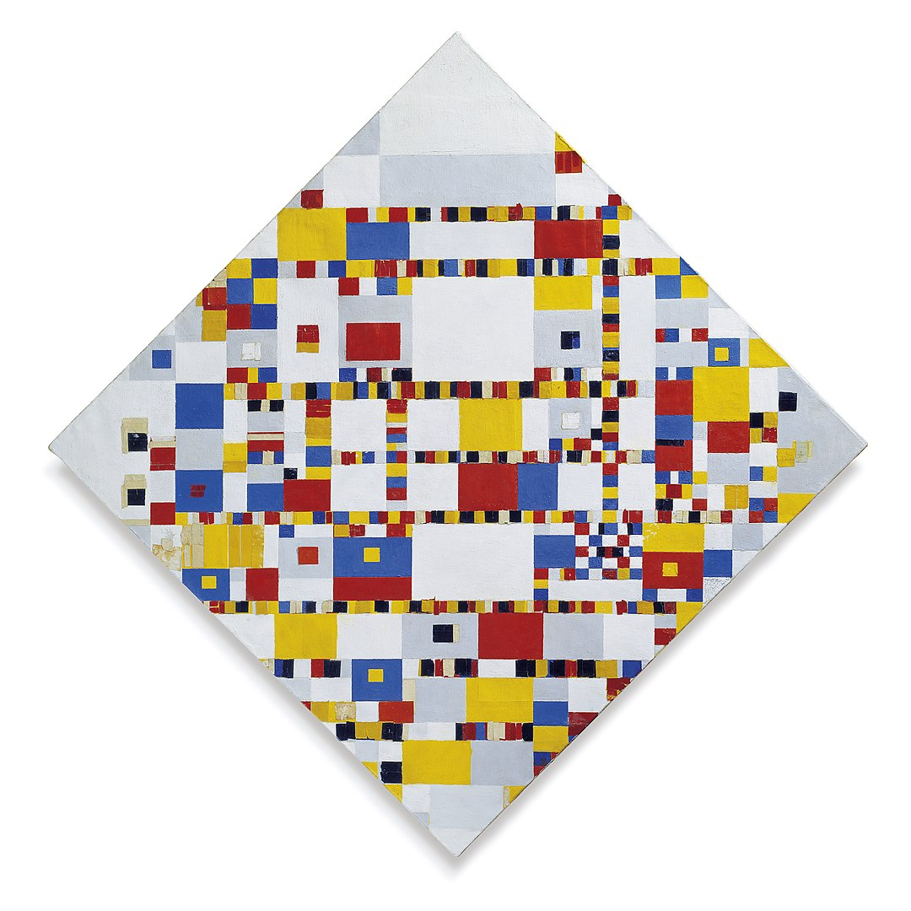

01 柳

- 題名
- 柳
- Willow Grove: Impression of Light and Shadow
- 制作年
- 1905
- 所蔵
- ダラス美術館
03 夕方，赤い木

- 題名
- 夕方，赤い木
- Evening; Red Tree (Avond; De rode boom)
- 制作年
- 1908-10
- 所蔵
- デン・ハーグ市立美術館
04 砂丘から見たドンブルグの浜と埠頭

- 題名
- 砂丘から見たドンブルグの浜と埠頭
- View from the Dunes with Beach and Piers, Domburg
- 制作年
- 1909
- 所蔵
- ニューヨーク近代美術館
06 荒れた城の春

- 題名
- 荒れた城の春
- Spring Sun (Lentezon): Castle Ruin: Brederode
- 制作年
- 1909-1910
- 所蔵
- ダラス美術館
07 灰色の木

- 題名
- 灰色の木
- Gray Tree
- 制作年
- 1911
- 所蔵
- デン・ハーグ市立美術館
08 赤・黄・青・黒のコンポジション

- 題名
- 赤・黄・青・黒のコンポジション
- Composition with Large Red Plane, Yellow, Black, Gray, and Blue
- 制作年
- 1921
- 所蔵
- デン・ハーグ市立美術館
09 Tableau I

- 題名
- Tableau I
- Tableau I
- 制作年
- 1930
10 赤・青・黄のコンポジション

- 題名
- 赤・青・黄のコンポジション
- Composition II in Red, Blue, and Yellow
- 制作年
- 1930
- 所蔵
- 個人蔵
11 Composition No. 10

- 題名
- Composition No. 10
- Composition No. 10
- 制作年
- 1939-42
16 ヴィクトリー・ブギウギ

- 題名
- ヴィクトリー・ブギウギ
- Victory Boogie Woogie
- 制作年
- 1942-44
- 所蔵
- デン・ハーグ市立美術館